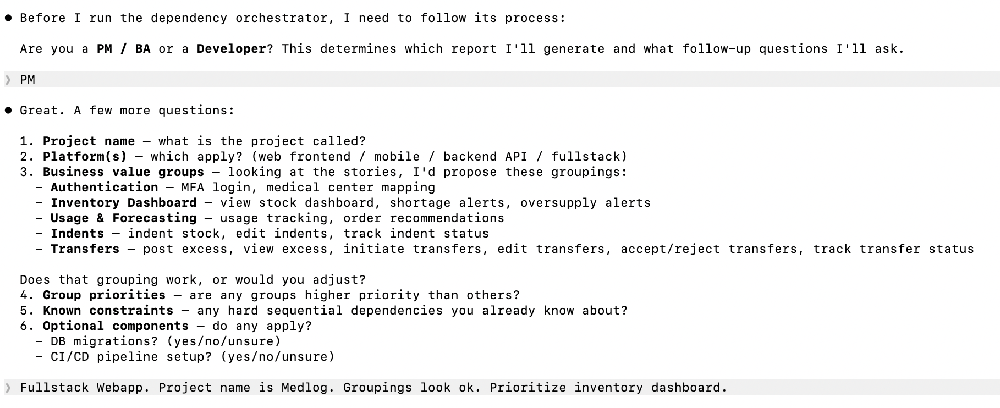
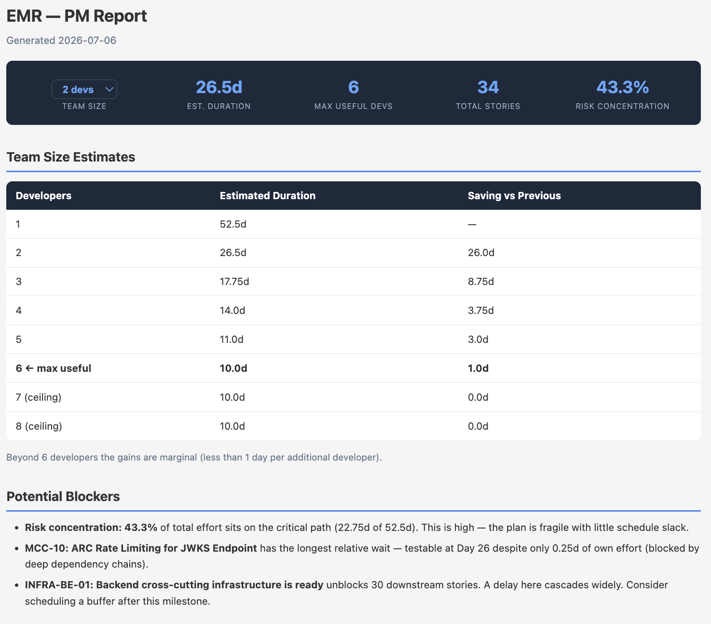
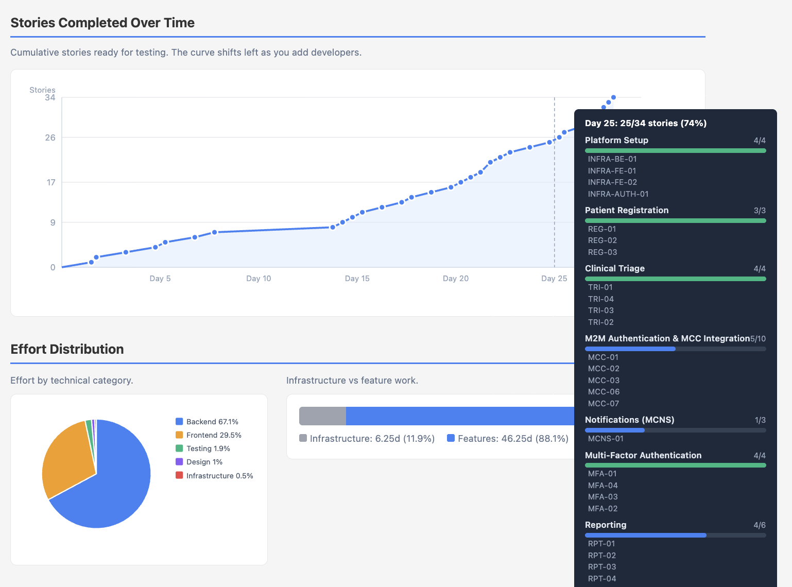
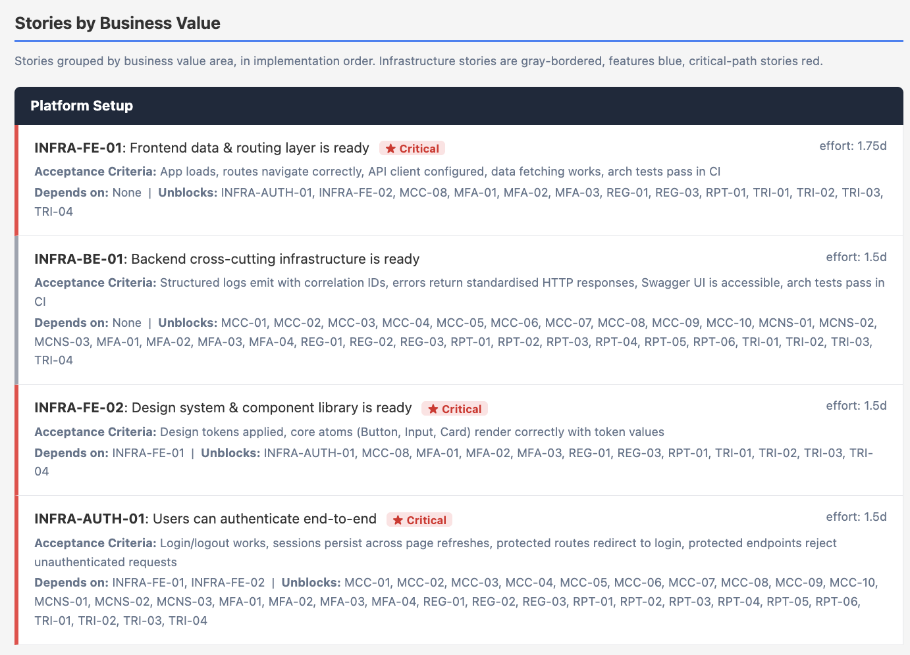
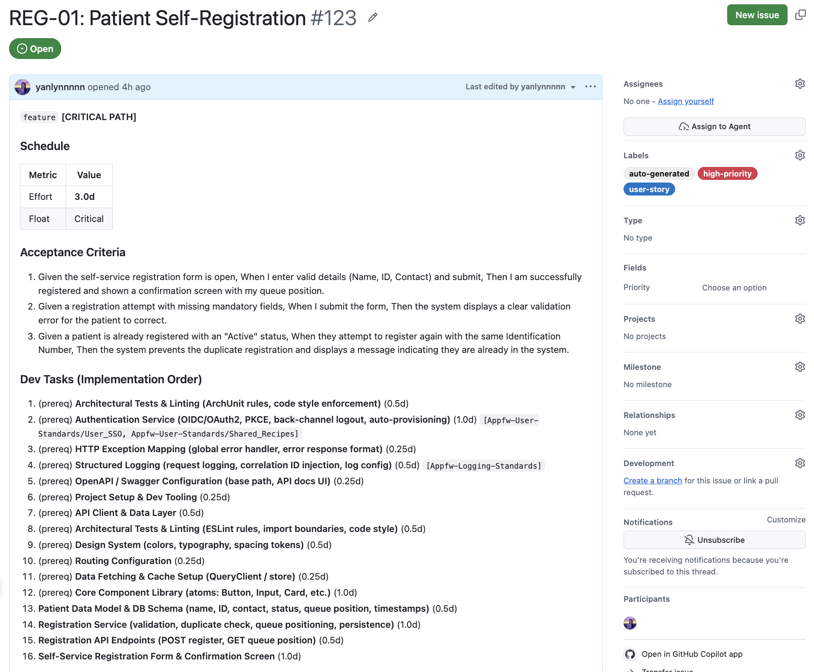

Lesson 0 — PO Workflow
This lesson walks through the full Product Owner (PO) journey in the Eitri Agentic Dev Workflow, covering how to elicit fine-grained user stories with stakeholders, generate a dependency-sequenced delivery plan with the Tech Lead, sync completed work into GitHub, and validate the system end-to-end.
/dependency-orchestrator with the Tech Lead to produce a PM delivery report/stories-to-issues to create structured GitHub issues before Wave 1 starts/reconcile-stories to sync closed GitHub issues back into the delivery planThis lesson is written for Product Owners (POs) who collaborate with a Tech Lead to plan and track delivery. Your role is to provide business requirements, review the generated delivery plans, and validate the final system, while the Tech Lead operates the underlying agentic tools.
/dependency-orchestrator (Phase 2), /stories-to-issues (Phase 3), and /reconcile-stories (Phase 5).The diagram below shows the seven steps of the PO journey. Each step has a clear owner and a concrete output that feeds the next. The entire workflow is anchored in the user stories you write in Step 1.
/grill-with-docs or /wayfinder to sharpen requirements before finalising./dependency-orchestrator — Generate the PM Reportpm-report.html — timeline, team size options, critical path, risk/stories-to-issues/stories-to-issues before development begins. Each user story becomes a structured GitHub issue in Gantt order, containing acceptance criteria, dev tasks, team standards references, and schedule data./reconcile-stories/reconcile-stories to pull closed GitHub issues back into the plan. The skill recalculates how much schedule buffer each remaining story has before it would delay the end date, updates the projected finish date, and regenerates both pm-report.html and dev-report.html — each completed story is marked as done, and an overall progress indicator shows how many stories remain.pm-report.html and dev-report.html with updated projectionsIn the agentic workflow, user stories are the primary input that drives the delivery schedule. The skill works backwards from each story's end state to determine every development task needed and how they depend on each other. Vague or incomplete stories produce unreliable plans.
/grill-with-docs or /wayfinder to sharpen storiesBefore finalising your story list, run it through one of these skills with the Tech Lead. Both will surface ambiguities that would otherwise only appear mid-implementation:
| Skill | Best used when | What it produces |
|---|---|---|
/grill-with-docs |
You have a rough idea and want to think it through. The skill interviews you to extract requirements and challenges assumptions | Architecture Decision Records (ADRs) and a domain glossary alongside a refined story list |
/wayfinder |
You have a complex, multi-path problem with several unknowns that need to be resolved as decision tickets | A set of decision tickets resolved one at a time, producing a clear route through the complexity |
/dependency-orchestrator, and selects PM when asked for role.The skill conducts a structured interview before building the delivery plan. The questions are always asked in this order:
critical, high, normal (default), low. Priority propagates to all stories in the group and affects scheduling order. Higher-priority stories are scheduled before lower-priority ones, even when they have the same schedule buffer.

The skill processes the PO's answers in several steps that run automatically. It takes roughly 3–5 minutes depending on the number of stories:
project-dag.json file, deduplicating shared foundation tasks across storiespm-report.html and its key metrics are summarised in the conversationIf stakeholders add new requirements after the initial plan is produced, re-run /dependency-orchestrator. The skill detects the existing plan, asks whether to merge the new stories in (add-on mode) or start fresh, and re-generates the full report with the combined picture. The critical path and delivery date are recomputed from scratch.
The PM report is written for stakeholder communication, not for developers. It deliberately omits implementation chains and wave scheduling. What it shows you is the information you need to make resourcing decisions and set delivery expectations.
The stats bar at the top of the report is interactive. The PO selects a team size from the dropdown and an estimate type (optimistic, likely, or pessimistic), and the estimated duration updates to reflect that choice. The remaining figures — max useful developers, total stories, and risk concentration — are fixed values derived from the delivery plan. The team size table below the stats bar shows the full duration breakdown for every staffing level, from 1 developer up to the point where adding more gives no further benefit. Use it to negotiate resourcing with management.

The PM report includes three charts that help set stakeholder expectations about capacity and delivery shape.

The story readiness timeline lists each user story in the order it becomes testable, showing its earliest testable day and business value group. The dates adjust automatically when the team size is changed. Use this to plan QA windows, schedule stakeholder demos, and set interim milestones.

/stories-to-issuesThe PM report from Phase 2 showed delivery durations across all possible team sizes so the PO could negotiate resourcing with management. Once a specific team size is agreed, the Tech Lead re-runs /dependency-orchestrator in Developer role. Because the full dependency analysis was already completed in Phase 2, the skill skips all planning questions and asks only for the agreed team size. It then generates the following outputs, all locked to that number:
dev-report.md) that becomes the developer source of truth alongside the GitHub issuesThese output files are then used in Phase 3 to populate each GitHub issue with the correct schedule data using the /stories-to-issues skill.
The /stories-to-issues skill reads the dependency orchestrator output and creates one GitHub issue per user story in Gantt order. The earliest-starting story becomes issue #1, so the GitHub issue list naturally reflects the implementation sequence. Developers work directly from these issues throughout Phase 4.

/stories-to-issuesThe skill asks for: the path to processor-output.json (the single output file from the dependency orchestrator), the target GitHub repo, the team size to use for scheduling data, any labels to add to all issues, and whether to do a dry run first. Always confirm the dry run output before creating real issues. Once created, issues cannot be automatically deleted.
The skill copies your original acceptance criteria into the GitHub issue without any summarisation or rephrasing. This is deliberate: the acceptance criteria in the issue are the same contract you agreed with the stakeholder in Phase 1. Any rewording risks silently changing the definition of done. When a developer closes this issue, they are asserting they have met your original criteria.
/dependency-orchestrator in add-on mode to update the plan.With GitHub issues created in Phase 3, developers pick them up in wave order and work through each story using the developer delivery report (dev-report.md) as their guide. Your role as PO is to monitor progress, protect the delivery date, and keep stakeholders informed.
Waves are dependency-derived groupings — all stories in a wave are unblocked and can run simultaneously. Use the wave structure when planning stakeholder demos and QA check-ins. Every story in a wave should be testable before the next wave begins.
/reconcile-stories/reconcile-stories to mark stories as done, update delivery projections, and regenerate the PM report with actual progress.As developers complete stories and close their GitHub issues, the original delivery plan becomes stale. /reconcile-stories pulls the current state of those issues into the plan: completed stories are marked done, the schedule for remaining stories is recomputed, and updated PM and dev reports are generated with accurate projections.
/reconcile-storiesThe skill asks for: the location of the dependency orchestrator's output files, the GitHub repo, team size, labels to filter issues by (use auto-generated to match only issues created by /stories-to-issues), the project start date, and where to write the reconciled reports. Always confirm the dry-run output first. It shows how many stories mapped to issues and how many are closed.
Run at the end of each wave to give stakeholders an updated picture before the next wave begins. Also run it any time someone asks "where are we?" The reconciled report answers with actual progress data, not the original estimate.
/reconcile-stories maps closed issues back to stories by parsing the story ID from the issue title (format: STORY-ID: title). It only works if the issues were created by /stories-to-issues. Manually created issues with different title formats will not be matched.
When all GitHub issues from Phase 3 are closed and automated tests pass, the project enters the acceptance phase. Closing a GitHub issue is the formal handoff from the dev team to you, signalling that a story's acceptance criteria are met. This is the PO's primary gate: does the application actually deliver the value described in each user story?
For each user story (working through the story readiness timeline from the PM report, earliest first):
During acceptance, it is easy to conflate two very different findings:
If you cannot distinguish them, go back to the acceptance criteria you wrote in Phase 1. If the criterion is there and not met, it is a defect. If the criterion is not there, it is a new requirement.
Once every story's acceptance criteria are verified and all E2E tests pass, the project is ready for User Acceptance Testing (UAT) with real end users or a controlled release. At this point the delivery is complete from an engineering perspective. What follows is an operational decision about release timing, not a technical one.